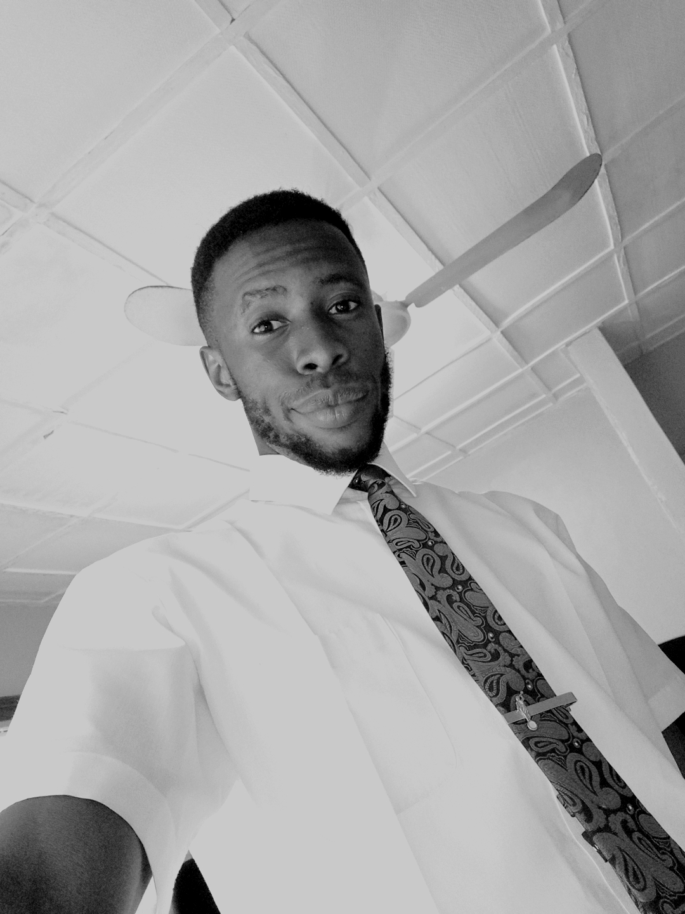

Hi my name is Obaroakpo, Obaro for short and i'm a Nigerian. I am currently pursuing my degree in Applied Technology, i've
dropped twice and returned thrice 😊 hopefully to finish this time. I love hands on skills such as painting, plumbing,
and any legal thing thing that would give me money 😁. I like to work with people of different vocations and learn things
about their profession especially if it has to do with praticals.
I am single at the moment and hoping to get married when i get to my final year in my university degree. I am taking this course
because it is one of the fast growing sector in I.T with great demand; and profiency in web designing makes a person to enjoy
various benefits like job stability and security, decent salary package, better future scope and business opportunities.
I have been a member of the church from birth. one of my favorite quotes is from Elder Jefferey R. Holland "Don’t you quit. You keep
walking, you keep trying, there is help and happiness ahead. Some blessings come soon. Some come late. Some don’t come until heaven.
But for those who embrace the gospel of Jesus Christ, they come. It will be alright in the end. Trust God and believe in Good Things to Come."
This reassuring message is one of the reaasons i had choose to continue my education despite all odds.
Thank you for looking at my webpage